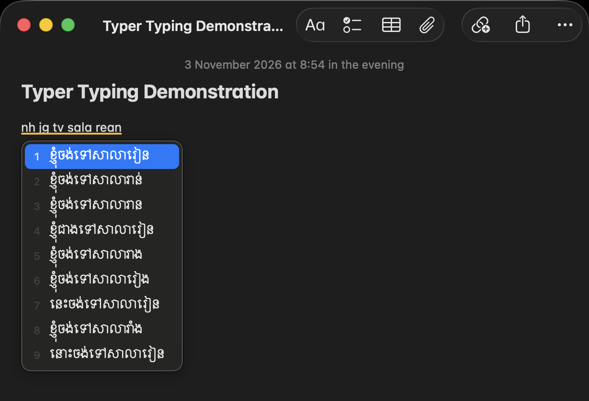
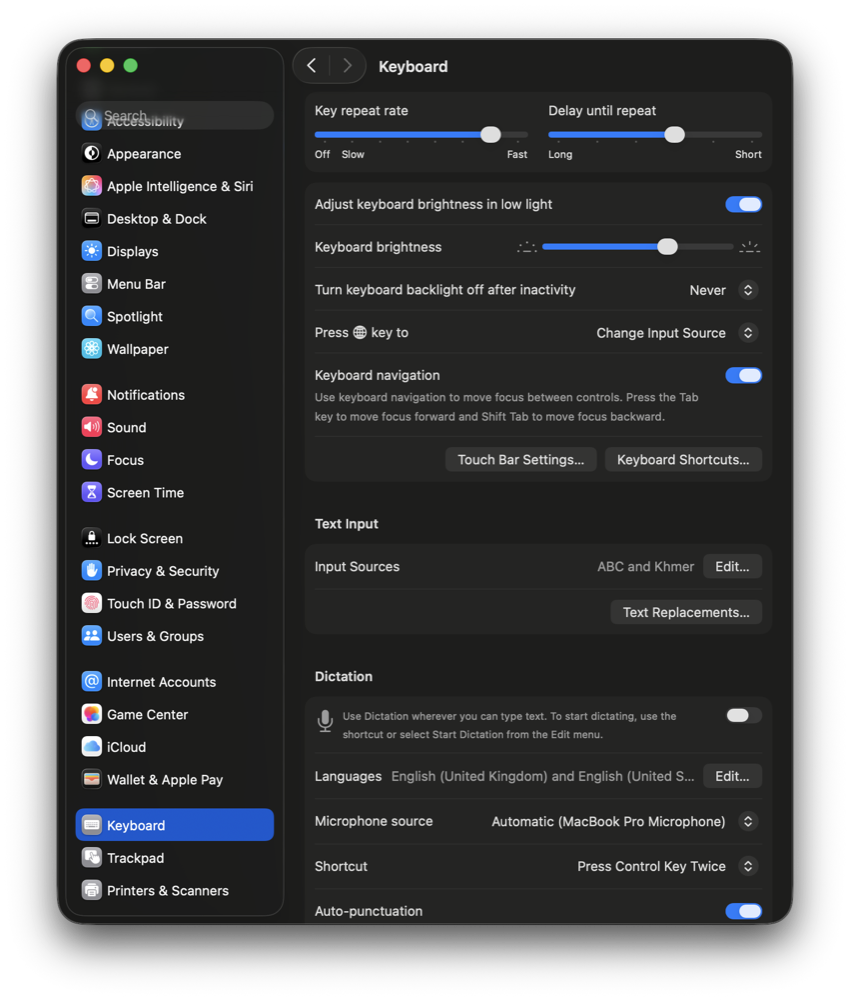
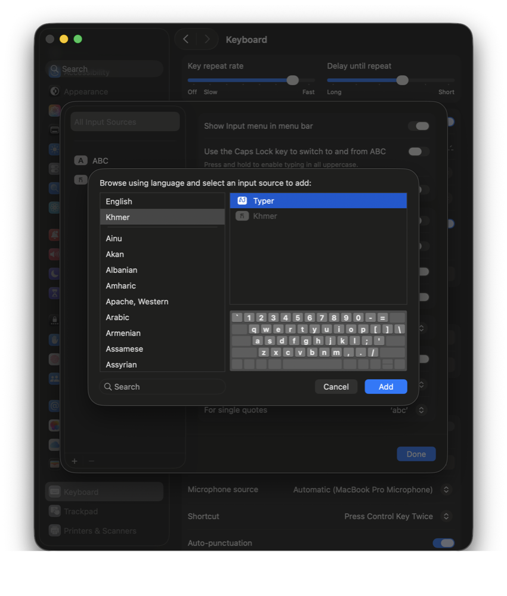
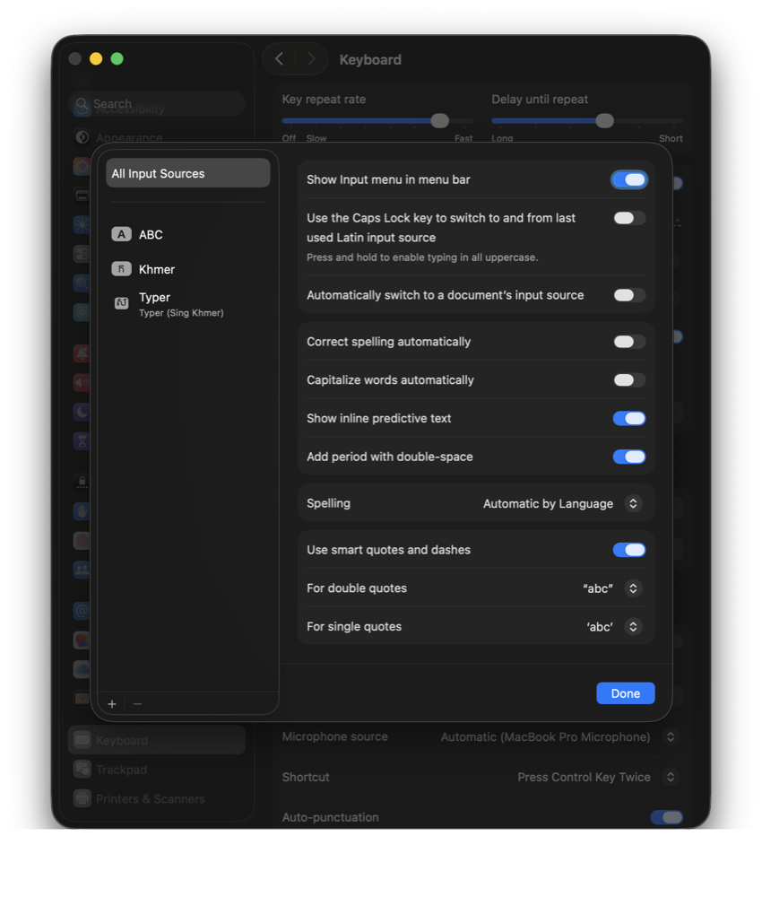
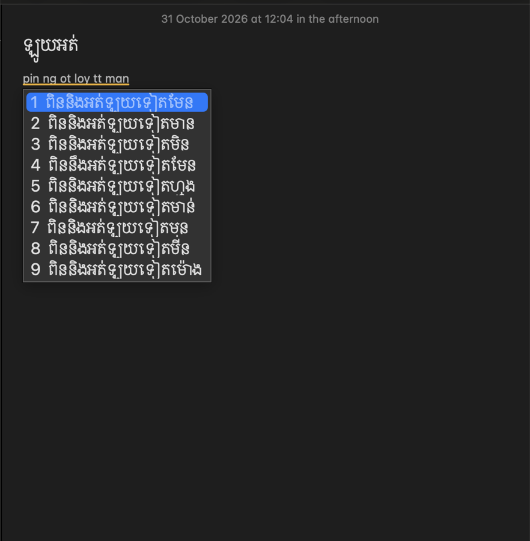

Sing Khmer input · macOS · Windows · Linux
Typer / សរសេរ
Type Khmer the way you already chat: in Latin letters, spelled however you like. Free for macOS, Windows and Linux.

Download for macOS Download for Windows Download for Linux
macOS 13 Ventura or newer (Apple Silicon and Intel) · Windows 10 or 11, 64-bit · Ubuntu 22.04+ / Debian 12+ · early preview: it will sometimes guess wrong, and it learns from what you pick.
Install on macOS
Takes about two minutes.
1 Run the installer
Click Download for macOS above, then double-click Typer.pkg in your Downloads and click through the installer.
macOS says it can't verify Typer? Typer isn't signed with a paid Apple Developer certificate yet. Open System Settings → Privacy & Security, scroll down, click Open Anyway next to Typer.pkg, then confirm. On macOS 13 or 14 you can also Control-click Typer.pkg and choose Open. Only do this if you got the file from this page.
Prefer Terminal?
Open Terminal (press ⌘ Space, type Terminal, press Return). Paste this and press Return:
curl -fsSL -o /tmp/Typer-macos.zip https://github.com/Nel-sokchhunly/typer/releases/latest/download/Typer-macos.zip
mkdir -p ~/Library/Input\ Methods
rm -rf ~/Library/Input\ Methods/Typer.app
ditto -x -k /tmp/Typer-macos.zip ~/Library/Input\ Methods/
xattr -dr com.apple.quarantine ~/Library/Input\ Methods/Typer.app
echo "Typer installed"It downloads Typer and puts it in your Input Methods folder. The xattr line removes macOS's download block for Typer only.
Either way, Typer goes only in your Input Methods folder.
2 Open Keyboard settings
Open System Settings → Keyboard. Under Text Input, click Edit… next to Input Sources.

3 Add Typer
Click + at the bottom left. Choose Khmer on the left, select Typer / សរសេរ on the right, and click Add.

Typer isn't in the list? Log out and back in (Apple menu → Log Out), then try again.
4 Check it's on
Typer now appears in your input sources. Turn on Show Input menu in menu bar so you can always see which one is active, then click Done.

Install on Windows
Takes about a minute. Windows support is new; please report anything that doesn't work.
1 Run the installer
Click Download for Windows above, then open Typer-windows-setup.exe from your Downloads. Click Install, then Finish.
Windows says "Windows protected your PC"? Typer isn't signed with a paid certificate yet. Click More info, then Run anyway. Only do this if you got the file from this page.
2 Switch to Typer
Press Windows Space and choose Typer / សរសេរ (listed under Khmer). The installer already added it, so there is nothing to set up in Settings.
Everything below works the same on Windows, except picking with the mouse: use Enter or a number instead.
Install on Linux
For Ubuntu 22.04 or newer and Debian 12 or newer (64-bit Intel/AMD), with the standard IBus input system. Linux support is new; please report anything that doesn't work.
1 Install the package
Click Download for Linux above, then open Typer-linux-amd64.deb from your Downloads and click Install. Or in a terminal:
sudo apt install ./Downloads/Typer-linux-amd64.deb2 Log out and back in
IBus only looks for new input methods when it starts.
3 Add Typer
Open Settings → Keyboard. Under Input Sources, click + Add Input Source, choose Khmer, then Typer / សរសេរ, and click Add. Switch to it with Super Space.
Everything below works the same on Linux, including picking with the mouse. KDE users on Fcitx5 aren't supported yet.
Use it
Switch to Typer with Ctrl Space or the 🌐 Globe key, or pick it from the input menu in the menu bar. On Windows, press Windows Space; on Linux, Super Space.
Type Khmer in Latin letters with spaces between words. Suggestions appear under what you type:

Type the whole phrase before you pick: the first suggestion is usually the whole phrase in Khmer.
| Space | Separate words. It never inserts anything, so keep typing |
| ↓ ↑ or Tab / Shift Tab | Move through the suggestions |
| Return | Insert the highlighted suggestion (the first one unless you moved) |
| 1 to 9, or click | Insert that suggestion |
| . , ? and other symbols | Stay in the phrase as typed: knhom, tov te? suggests ខ្ញុំ, ទៅទេ? |
| Esc | Insert exactly what you typed, in Latin letters |
| Delete | Edit what you're typing |
| Tap Ctrl on its own, with nothing typed | Switch between Khmer and English |
Khmer or English?
A small yellow ខ or EN badge under the cursor shows the mode. It hides while you type and comes back when you pause for a second. In English mode your keys go straight to the app as normal English; tap Ctrl again to go back to Khmer. Shortcuts like Ctrl C don't switch. On Linux it shows in the suggestion popup and comes back as soon as a word is inserted.
Tips
- Spell however you normally do.
knhom,knhandnhall give ខ្ញុំ. - When the right word isn't first, pick it. Typer remembers and puts it first next time.
- English words mix in:
thank you bongsuggests thank you បង. Words that are also Khmer spellings (mean= មាន) stay Khmer first. teclosing a negative becomes ទេ, however long the sentence:ot mean luy tesuggests អត់មានលុយទេ.- A word exactly as typed in Latin letters: type it, then press Esc. You stay in Khmer.
Settings
New in 0.4.0. Open Typer Settings to switch features on or off. Everything is on by default, and changes apply on your next keystroke.
- macOS: click the input menu in the menu bar, then Typer Settings…
- Windows: Start menu → Typer Settings, or Settings → Time & language → Language & region → Khmer → Typer → Options.
- Linux: the keyboard menu in the top bar → Typer Settings…, or open Typer Settings from your apps.
- Extra words: suggest words whose Latin spelling Typer guessed by rule (
zin→ ហ្សីន). They always rank below known words. - English words: mix English into suggestions, like
thank you bong→ thank you បង. - Learn from my picks: rank what you pick higher next time. Off: nothing new is saved.
- Mode badge: show the ខ / EN badge under the cursor.
Privacy
Everything stays on your computer. Typer has no network access and sends nothing anywhere. What you pick is saved locally so Typer can learn: in ~/Library/Application Support/Typer/ on a Mac, %APPDATA%\Typer on Windows, ~/.local/share/typer/ on Linux. Delete that folder at any time to reset it. To stop saving picks, switch off Learn from my picks in Typer Settings.
Update
Download and run the installer again (on a Mac you can also use the Terminal command). What Typer has learned is kept. On Windows, apps that were open during the update switch to the new version after a restart. If it still behaves like the old version, switch to another input source and back, or log out and back in.
Uninstall
Remove Typer in System Settings → Keyboard → Input Sources → Edit… (select it, click −), then run:
rm -rf ~/Library/Input\ Methods/Typer.app ~/Library/Application\ Support/TyperOn Windows: Settings → Apps → Installed apps → Typer → Uninstall.
On Linux: sudo apt remove typer, and remove Typer from Input Sources.
Problems?
- No suggestions appear: check Typer is selected in the menu bar. You may be in English mode; tap Ctrl once.
- Typer isn't in the Add list: log out and back in, then try step 3 again.
- Old icon or old behaviour after updating: run
killall -9 TextInputSwitcher TextInputMenuAgentin Terminal (macOS restarts them), or remove Typer from Input Sources and add it again, or log out and back in. - Wrong suggestion: please report it with what you typed and what you expected. These reports are how Typer gets better.